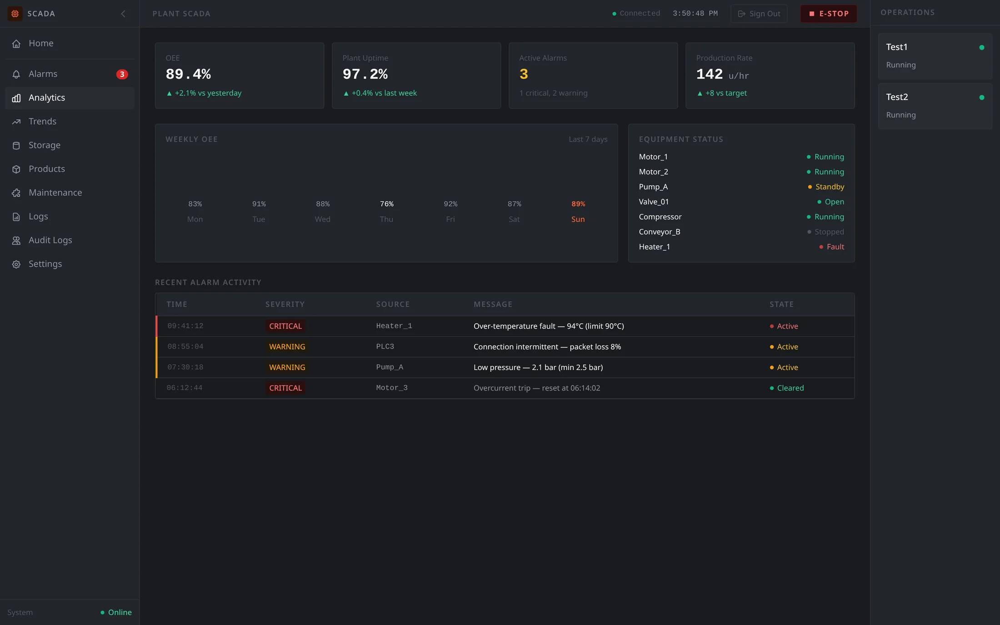
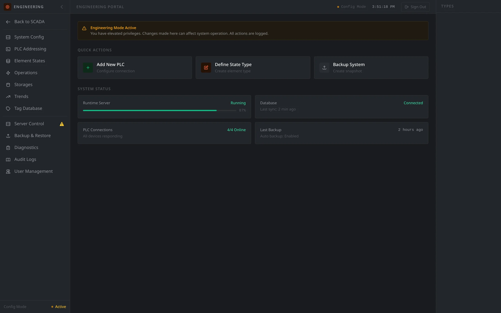

OPC UA · WebSocket · Self-Hosted
Real-time SCADA.
Zero platform lock-in.
AutomationField talks straight to your PLCs over OPC UA and pushes every state change to the browser over WebSocket — one self-hosted Go binary, no cloud dependency, no per-tag licensing.
Live tag feed (illustrative)

What it does
Built for the plant floor, not a demo reel.
Every feature exists because a real process needed it.
Real-time monitoring
OPC UA subscriptions push every state change to the browser over WebSocket — no polling, no refresh button.
Live mimic diagrams
Plant layouts are just SVG — element colors and states update live as the process runs, drawn the way your engineers actually draw it.
Alarms & events
Severity-ranked alarms with an acknowledge/clear workflow, filterable by state and source, so nothing gets lost in the noise.
Trends & historian
Time-series logging per tag, queryable and chartable, so you can see what happened five minutes — or five months — ago.
Engineering portal
PLC addressing, element types, operations, and parameters are all point-and-click. No redeploy to change a setpoint range.
Storage & product tracking
Model silos, tanks, and product batches alongside the process that fills and empties them.
Parameter control
Edit a setpoint, save it, review it — then explicitly push it to the PLC. Two deliberate steps, never an accidental write.
Self-hosted & lightweight
One Go binary, SQLite on disk, no build step on the frontend. Runs on a machine you already have on the floor.
How it works
From field device to browser tab, live.
One data path, no polling. When a PLC value changes, every connected dashboard knows within milliseconds.
01
Field devices
PLCs expose live values on an OPC UA server, out on the floor.
02
AutomationField backend
The Go binary subscribes to those nodes and holds current plant state in memory.
03
WebSocket broadcast
Every change is pushed, instantly, to every connected client. No client ever asks twice.
04
Live dashboard
The mimic diagram, alarms, and trends update in the browser — no refresh, no delay.
Real screens, not mockups
See it before you ask for a demo.
Engineering portal
Configure the system without touching code.
PLC addressing, element type definitions, operations, storages, trends, and users are all managed from one CRUD-driven portal — with a clear "Engineering Mode" warning banner so nobody forgets these changes touch a live system.
- Add and address PLCs without redeploying
- Define element types, states, and colors
- Snapshot & restore system backups

Get in touch
Questions, feedback, or you just want to talk PLCs.
This is an independent, solo-built project — email goes straight to me, no ticket queue.
haveljan002@gmail.com